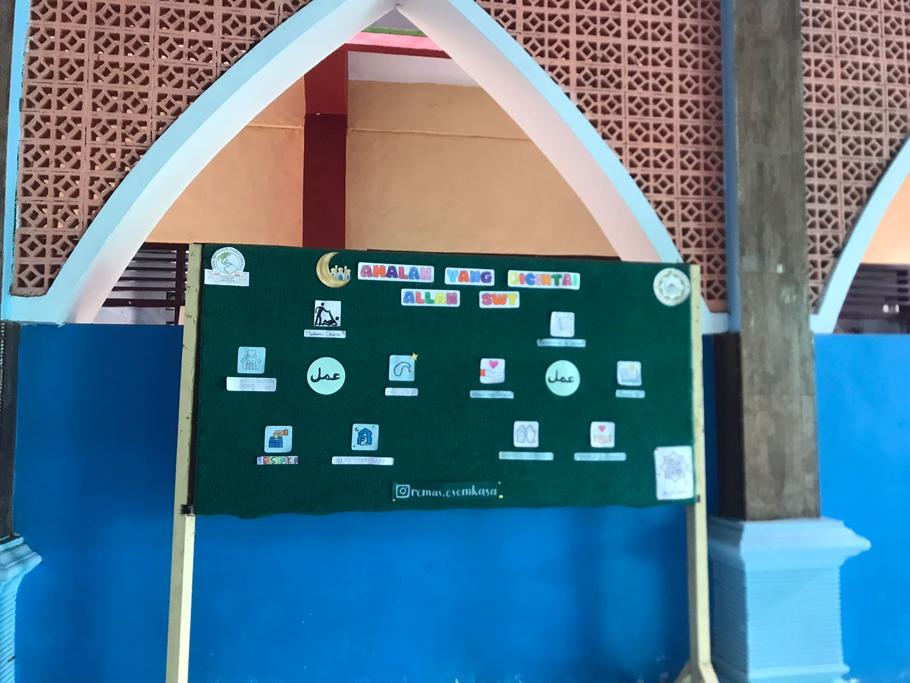

Kamar mandi perempuan memiliki ruangan khusus yang
digunakan oleh wanita
untuk keperluan kebersihan dan
sanitasi. Biasanya, fasilitas ini dilengkapi dengan cermin,
dan tempat pembuangan sampah.
Tempat wudhu perempuan merupakan fasilitas yang
disediakan khusus untuk
wanita agar dapat berwudhu
dengan nyaman dan tertutup dari pandangan laki-laki.
Area ini biasanya terdiri dari beberapa keran air dengan
saluran pembuangan yang baik,
serta tempat duduk atau
pijakan kaki agar lebih nyaman saat membasuh anggota
tubuh dan pembatas untuk menjaga privasi.
AULA MASJID

Aula masjid sebagai tempat untuk menyelenggarakan
acara seperti pengajian,pertemuan,seminar,
tempat
istirahat,berteduh,rapat ,musyawarah,tempat belajar
siswa siswi,tempat berkumpul,silaturahmi,kegiatan
keagamaan dan kegiatan lainnya yang mendukung
aktivitas keluarga SMKN 1 BANYUWANGI.
TEMPAT MUKENAH & LEMARI BAWAH

Tempat mukena di masjid untuk memudahkan akses bagi
jamaah,memfasilitasi jamaah yang membutuhkan,
meningkatkan kenyamanan jamaah wanita,sebagai wujud
kepedulian dan pelayanan masjid.
Lemari masjid sangat penting untuk menjaga dan
memudahkan
pengelolaan Al-Qur'an agar dapat
digunakan dengan baik oleh jamaah,di dalam lemari juga
terdapat
mukena dan sajadah yang sudah disiapkan juga.
MADING

Mading merupakan salah satu media yang digunakan
untuk menyampaikan informasi secara tertulis dan
bersifat sederhana.
Mading digunakan sebagai tempat
di mana siswa dapat mengekspresikan ide, pandangan,
dan kreativitas mereka.
Mading juga sering digunakan
untuk mempromosikan kegiatan sekolah, berbagi berita
penting,
atau memamerkan hasil karya siswa.
TEMPAT MUKENAH & LEMARI ATAS

Tempat mukena masjid dilantai atas sangat penting
untuk mendukung kenyamanan dan kemudahan bagi
jamaah wanita dalam beribadah.
Tempat mukena di masjid atas yaitu,memudahkan akses
bagi jamaah wanita,
memfasilitasi jamaah wanita yang
membutuhkan,meningkatkan kenyamanan jamaah wanita,
sebagai wujud kepedulian
dan pelayanan Masjid.
KAMAR MANDI & TEMPAT
WUDHU LAKI LAKI

Kamar mandi laki-laki di masjid adalah fasilitas yang
disediakan untuk kebersihan dan kenyamanan jamaah
pria
sebelum dan sesudah beribadah.
Tempat wudhu laki-laki di masjid adalah area khusus
yang disediakan untuk
jamaah pria agar dapat berwudhu
sebelum melaksanakan shalat.
Wudhu merupakan syarat
sah dalam ibadah shalat, sehingga tempat ini dibuat agar
jamaah
bisa bersuci dengan nyaman dan sesuai dengan
tata cara Islam.
KAMAR MANDI & TEMPAT WUDHU
PEREMPUAN ATAS

Kamar mandi perempuan yang terletak di lantai atas
sebuah bangunan, seperti masjid atau
fasilitas umum
lainnya, biasanya dirancang dengan memperhatikan
aspek kenyamanan, privasi,
dan kebersihan.
Tempat wudhu yang terletak di lantai atas, seperti
di masjid atau gedung
bertingkat lainnya, dirancang
untuk memberikan kenyamanan bagi jamaah yang
berada di lantai tersebut.
Fasilitas ini memungkinkan
jamaah untuk berwudhu tanpa harus turun ke lantai
bawah, sehingga lebih praktis dan efisien
Keunggulan
kamar mandi dan tempat wudhu lantai atas yaitu:
Lebih dekat dengan ruang sholat jamaah tidak perlu
turun ke lantai bawah untuk berwudhu,
mengurangi
keramaian jika tempat wudhu dan kamar mandi di
lantai bawah penuh.